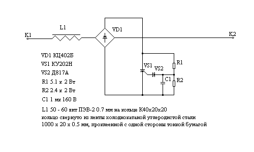
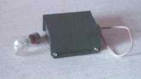
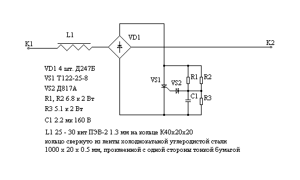
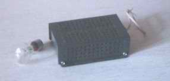
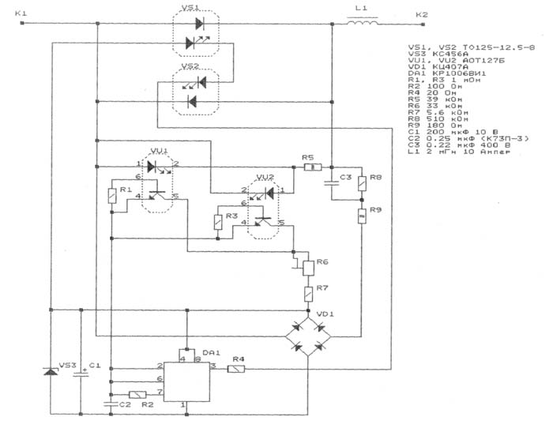
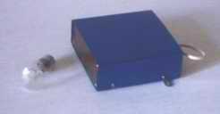

Электронный балласт для продления ресурса
(срока эксплуатации) ламп накаливания
Теория
В процессе изготовления лампы накаливания ее нить получается неоднородной. Разные участки нити имеют разное сопротивление в расчете на единицу длины и нагреваются по-разному при прохождении электрического тока. Участки с большим сопротивлением на единицу длины имеют более высокую температуру, т. е. имеет место локальный перегрев. Если начальная неоднородность невелика, то и локальный перегрев мал. При включении лампы, хотя бросок тока и превосходит рабочий ток в несколько раз, за счет достаточно равномерного прогрева нити ее перегорания не происходит. В процессе эксплуатации лампы вещество нити с участков с большим сопротивлением на единицу длины испаряется интенсивнее, что приводит к ускоренному износу этих участков по сравнению с остальными, т. е. к увеличению неоднородности нити. В конечном итоге бросок тока при включении лампы вызывает локальный перегрев такого участка нити, достаточный для ее перегорания.
Вывод: Хотя лампы и перегорают во время включения, но свой ресурс вырабатывают в процессе эксплуатации. Поэтому в первую очередь необходимо принять меры к замедлению роста неоднородности нити, что может быть достигнуто за счет снижения рабочего тока, и только после этого заботиться о плавном увеличении тока при включении. Снижения рабочего тока можно достигнуть за счет снижения напряжения питания лампы накаливания, т. е. путем введения в схему регулятора мощности.
Экономический анализ
Цена изготовления регулятора мощности до 1 кВт вряд ли может составить менее 10 долларов. При этом необходимо добавить расходы на эксплуатацию и ремонт и учесть конечный срок службы регулятора.
Цена лампы накаливания общего назначения типа В, Б, БК составляет около 10 центов. Использование регулятора мощности для совместной работы с одной – пятью лампами такого типа может быть обусловлено неэкономическими факторами: невозможность достаточно частой замены ламп (например, в местах с ограниченным доступом); нежелание часто менять лампы; соображения комфорта.
К экономическим факторам могут быть отнесены: использование большого количества ламп (например, для освещения залов, когда суммарная стоимость ламп велика); использование дорогих ламп, сопоставимых по цене с регулятором мощности; повышенное напряжение в сети (в сети переменного тока допускается напряжение до 242 В, реально может стать выше при уменьшении нагрузки на трансформаторную подстанцию) и большие электромагнитные помехи (частое включение-выключение электродвигателей, пускателей, электромагнитов и т. п.), что приводит к существенному сокращению ресурса лампы накаливания.
Техническая реализация
Для продления ресурса лампы накаливания предлагается уменьшить напряжение на ней приблизительно на 40 вольт, а для компенсации потерь светового потока использовать лампы большей на одну ступень мощности (вместо 25 Вт – 40 Вт, вместо 40 – 60, 60 – 75, 75 – 100, 100 – 150). Рассеиваемая электрическая мощность при этом не возрастает, и требования к проводке, патронам и выключателям остаются прежними.
Использование устройств с несимметричным ограничением отрицательной и положительной полуволн напряжения (например, последовательно включенного диода) приводит к появлению пульсаций светового потока частотой 50 Гц, заметных глазом (особенно периферическим зрением), и утомляющих зрение. Пульсации светового потока частотой 100 Гц, возникающие, кстати, и при включении лампы в сеть напрямую, практически незаметны, потому что, во-первых, за счет тепловой инерции спирали (может рассматриваться как ФНЧ первого порядка) они меньше по величине, а, во-вторых, за счет инерционности зрения меньше воспринимаются глазом. Поэтому необходимо использовать симметричные регуляторы.
Применение балластного сопротивления неудобно из-за того, что для каждой нагрузки его необходимо подбирать индивидуально, кроме того, на нем рассеивается достаточно большая тепловая мощность.
Для уменьшения напряжения на 36 вольт может быть применен трансформатор 220/36 В типа ОСО-0,25 (имеется в продаже в магазинах электроизделий), включенный в режиме понижающего автотрансформатора. При этом мощность нагрузки может достигать 2 кВт. Недостатком является необходимость трехточечного подключения.
Более удобен для подключения тиристорный регулятор мощности (электронный балласт), который можно включать в разрыв одного из проводов, например, последовательно с выключателем или там, где более удобно установить устройство. Недостатком тиристорных регуляторов являются помехи для радиоприема на ДВ и СВ и некоторых электронных устройств. Автором разработаны и испытаны регуляторы, схемы и внешний вид которых приведены на рис. 1 - 6.

Рис. 1. Схема электрическая принципиальная регулятора мощности до 300 Вт.

Рис. 2. Внешний вид регулятора мощности до 300 Вт.

Рис. 3. Схема электрическая принципиальная регулятора мощности до 1 кВт.

Рис. 4. Внешний вид регулятора мощности до 1 кВт.

Рис. 5. Схема электрическая принципиальная регулятора мощности до 2 кВт.

Рис. 6. Внешний вид регулятора мощности до 2 кВт.
Ссылки:
19.09.2003
25.01.2006
19.06.2010
Альтернативные источники
энергии
Компьютеры и
Интернет
Магнитные поля
Механотронные системы
Перспективные
разработки
Электроника и технология